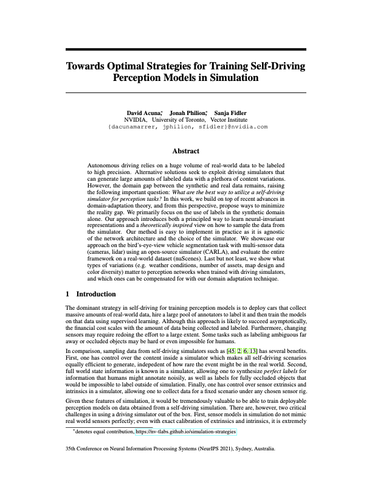

David Acuna*, Jonah Philion*, Sanja Fidler
NVIDIA, University of Toronto, Vector Institute
NeurIPS 2021
Autonomous driving relies on a huge volume of real-world data to be labeled to high precision. Alternative solutions seek to exploit driving simulators that can generate large amounts of labeled data with a plethora of content variations. However, the domain gap between the synthetic and real data remains, raising the following important question: What are the best ways to utilize a self-driving simulator for perception tasks? In this work, we build on top of recent advances in domain-adaptation theory, and from this perspective, propose ways to minimize the reality gap. We primarily focus on the use of labels in the synthetic domain alone. Our approach introduces both a principled way to learn neural-invariant representations and a theoretically inspired view on how to sample the data from the simulator. Our method is easy to implement in practice as it is agnostic of the network architecture and the choice of the simulator. We showcase our approach on the bird's-eye-view vehicle segmentation task with multi-sensor data (cameras, lidar) using an open-source simulator (CARLA), and evaluate the entire framework on a real-world dataset (nuScenes). Last but not least, we show what types of variations (e.g. weather conditions, number of assets, map design, and color diversity) matter to perception networks when trained with driving simulators, and which ones can be compensated for with our domain adaptation technique.
|  | David Acuna*, Jonah Philion*, Sanja Fidler (* Equal contribution) Towards Optimal Strategies for Training Self-Driving Perception Models in Simulation NeurIPS, 2021. |
|
|
|
||
Our synthetic data generation strategy aims to minimize the distance between the labels marginal (P(y)) while at the same time encouraging for diversity in the generated data. Importantly, if labels in the target domain are not available, we cannot measure the divergence between the labels marginals between the generated and the real world data. That said, given the bird‘s-eye view segmentation map, it is not hard for a human to design spatial priors representing locations with high probability of finding a vehicle. As visualized in the figure, we design a simple prior that samples locations for non-player characters (NPCs) proportional to the longitudinal distance of the vehicle to the ego car.
Synthetic Data Generation. (Left) Standard approaches sample NPC locations from the map's drivable area based on the structure of the road. (Right) We sample the NPC locations based on our spatial prior (independent of the structure of the road) which aims for diversity in the generated data and minimizes the divergence between the task label marginals.
Marginals induced by different sampling strategies for the task of BEV vehicle segmentation. Figures (a) and (b) show the induced marginal Ps(y) when the sampling strategy follows standard approaches: e.g. the NPC locations are sampled based on the structure of the road or the map’s drivable area. Figure (c) shows the induced marginal when the NPC locations are sampled using our spatial prior. Figure (d) is for reference as it assumes access to target labeled data. It shows the induced marginal when the NPC locations are sampled using a target prior estimated on the nuScenes training set. Figure (e) shows the estimated label marginal of the nuScenes validation set for the task of vehicle BEV segmentation Pt(y). The number on the top-left of the figures corresponds to the distance between the induced marginal, and the nuScenes validation set estimated marginal (lower is better). In comparison with standard approaches, our sampling strategy minimizes the divergence between the task label marginals and leads to a more diverse synthetic dataset. Notably, comparing (c) and (d), we can observe their distances are in the same order, yet sampling based on the spatial prior does not require access to labeled data.
Our training strategy extends f-DAL (the training algorithm from [3]) to dense prediction tasks, with the aim to learn domain-invariant representations and minimize the divergence between virtual and real world in a latent space Z. Minimizing the divergence in a representation space allows domain adaptation algorithms to be sensor and architecture agnostic. We additionally take inspiration from [46] and incorporate the use of pseudolabels into the f-DAL framework. We emphasize that our data-generation strategy is what enables us to effectively learn invariant representations using the adversarial framework (why? check out the paper!)
We visualize the output of Lift Splat (LS) for a scene from nuScenes val. The model takes as input the 6 images shown on the left, outputs the heatmap shown on the right. We project the prediction back onto the input images colorized according to depth. a) Top is a LS model without adaptation, b) Middle is a LS model trained with our method, and c) Bottom is a LS model trained directly on nuScenes.
What matters to the self-driving simulator with and without our domain adaptation techinque?
Camera Realism. We measure the extent to which it is important for images to be photorealistic by toggling CARLA's camera postprocessing (see "RGB Camera" here). Without any adaptation, the Lift Splat model is unable to generalize to the real world. Adaptation compensates for the loss in photorealism to a large degree.
Vehicles Per Episode / Car Color Variation. An intuitive goal for self-driving simulators has been to improve the quantity and quality of vehicle assets. We show that performance is sensitive to the number of vehicle assets used in the simulator and the number of NPCs sampled per episode (a dataset with 1 vehicle sampled per episode is visualized in the video), but is not so sensitive to the variance in the colors chosen for the NPCs (a dataset where vehicle colors are sampled uniformly is visualized below).
Vehicle Assets. We vary the number of vehicle assets used when sampling CARLA data. Lift-Splat-Adapt (ours) is able to compensate for performance when very few assets are used. The video shown below shows a dataset where only 1 vehicle asset is used.
Weather. nuScenes contains sunny, rainy, and nighttime scenes. We test the extent to which it’s important for CARLA data to also have variance in weather. CARLA has 15 different "standard" weather settings as well as controls for cloudiness, precipitation, precipitation deposits (e.g. puddles), wind intensity, wetness, fog density, and sun altitude angle (which controls nighttime vs. daytime on a sliding scale). We randomly sample these controls and compare performance against sampling categorically from the 15 preset weather settings. We also compare against exclusively using the "sunny" weather setting (shown in the video). We find that our method is able to compensate for much of the loss in weather diversity and using only the sunny weather setting on data where NPCs are sampled according to the prior achieves higher performance than any amount ofweather diversity with NPCs sampled according to the town.
Camera Extrinsics and Intrinsics. Instead of sampling camera extrinsics and intrinsics that exactly correspond to extrinsics and intrinsics from nuScenes, we sample yaw (left) and field of view (middle) from nuScenes with some variance. Transfer performance is largely unaffected by adjusting the distribution of intrinsics and extrinsics. Note that generalization across extrinsics and intrinsics is somewhat expected given the design of the Lift Splat Shoot architecture.